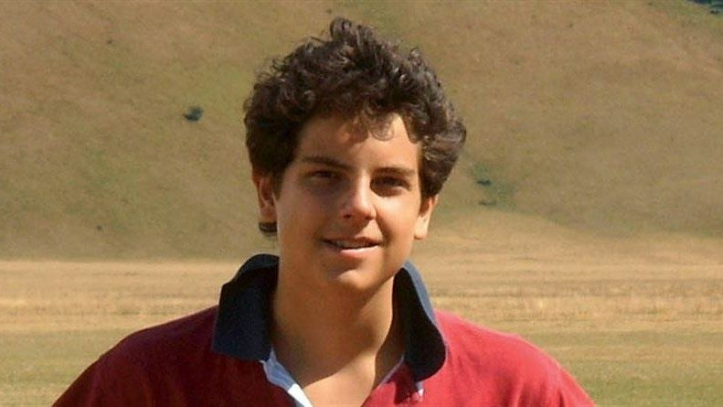
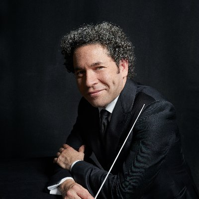

Introduction
Hey! I'm Álvaro Gallo, a computer science student at Universidad Panamericana, with interest in graphics programming. I do some projects and school assignments and publish them in my Github page. I like to read, write and play the piano in my free time. My favorite quote is:
Until the day God will deign to reveal the future to man, all human wisdom is contained in these two words, 'Wait and Hope'
- The Count of Monte-Cristo, Alexandre Dumas
Background
I've been programming since I was 15, starting with C++ and simple web
development. I later graphics programming, which is what I enjoy the
most. I've worked with C++ for 4 years now, and I enjoy learning new
things about the language and its ecosystem. I'm currently learning
more about competitive programming and graphics programming in my free
time.
My goal is to become an investigator in the graphics programming
field, or to put my own company related to it. I'm currently looking
for internships or job opportunities to build some experience.
Schools
-
 Colegio Altamira
(2012-2024)
Colegio Altamira
(2012-2024)
- Universidad Panamericana (2024-now)
Skills
-
C++ (80%):
Modern standards, project structure, best practices (linters, memory safety, etc), open source contribution, external library usage (SFML, Raylib, ImGui, SDL, EnTT).
-
Server configuration and system technologies (70%):
Linux, ssh, Docker, Bash scripting, Nginx, Caddy reverse proxy, Apache, etc.
-
DevOps (60%):
Git, Github, Buildsystems, Makefiles, CI with github actions.
-
Web Technologies (50%):
HTML/CSS/JS, React with Redux, Backend development with restapi and template (expressjs, flask with jinja and fastapi), SQL databases (MySQL, Postgres).
-
AI Usage (30%):
Code completion using github copilot. Text generation using chat gpt, gemini and claude.
Hobbies
- I like writing personal essays and documentation on technical and philosophy topics.
- I like reading classics and science fiction books.
- I play the piano, I've been learning since I was 13 and I still play and take lessons in my free time. I specifically enjoy playing and listening to classical music
Favorite food
Favorite cuisines:
- Mexican
- Italian
- Japanese
- Spanish
- German
Least favorite cuisines:
- Arab
- Scottish
- English
Favorite Books, Movies & TV Shows
| Books | Movies | TV Shows |
|---|---|---|
|
|
|


Contact
Email: galloalvaro5 at gmail dotcom
Weekly Schedule
Projects
Tower defense game repo - A simple tower defense game based in space. (work in progress)
Parabolic shot simulator repo - Simulator for parabolic motion in lua, used in Open Doors 2023
Connect four game repo - A simple connect four game made in C++20 and sfml using an ecs(2024).
Experience
Software developer with focus on modern C++ and graphics. I enjoy building clean APIs and tools that last.
Heroes
| Picture | Name | Date of Birth / Death | Profession | Achievements / Famous Work |
|---|---|---|---|---|
 |
Steve Wozniak | Aug 11, 1950 - | Engineer, Inventor | Co-founder of Apple Inc., designer of Apple I and II computers |
|  | Carlo Acutis | May 3, 1991 – Oct 12, 2006 | Student, Programmer | Documented Eucharistic miracles, beatified by the Catholic Church |
|  | Gustavo Dudamel | Jan 26, 1981 - | Conductor, Violinist | Music Director of LA Philharmonic, world-renowned conductor |